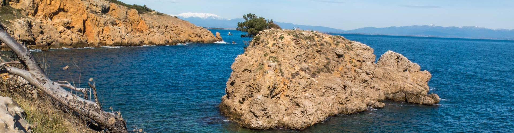

Ruta · Montgrí
La ruta del camí de ronda de l’Escala és una variada i atractiva proposta que recorre el litoral de la costa brava al terme municipal de l’Escala i amb les muntanyes del Pirineu com a teló de…